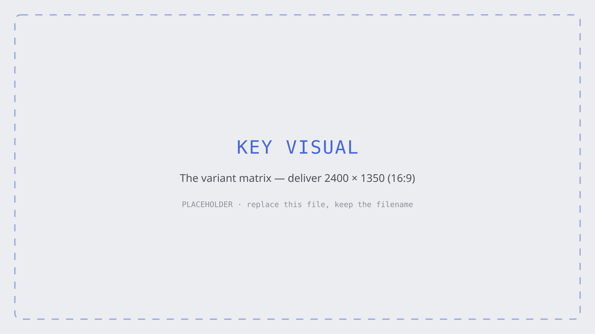
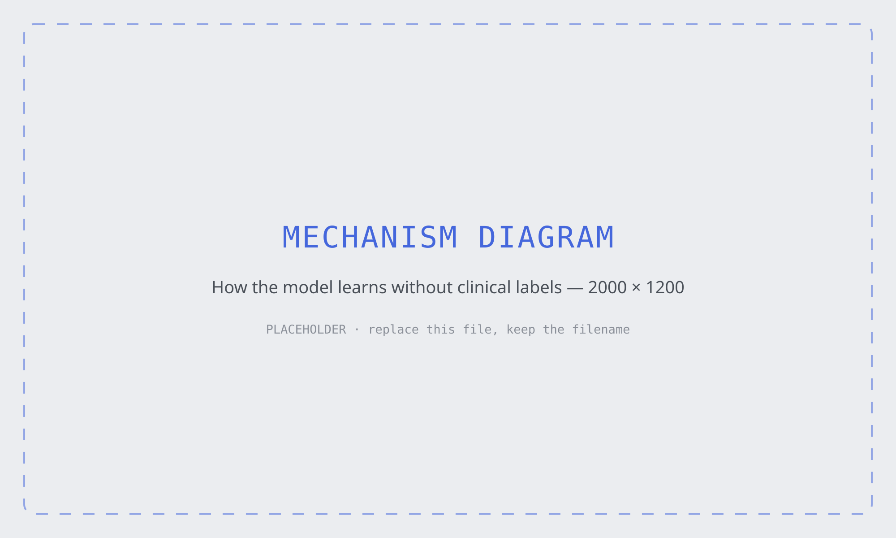
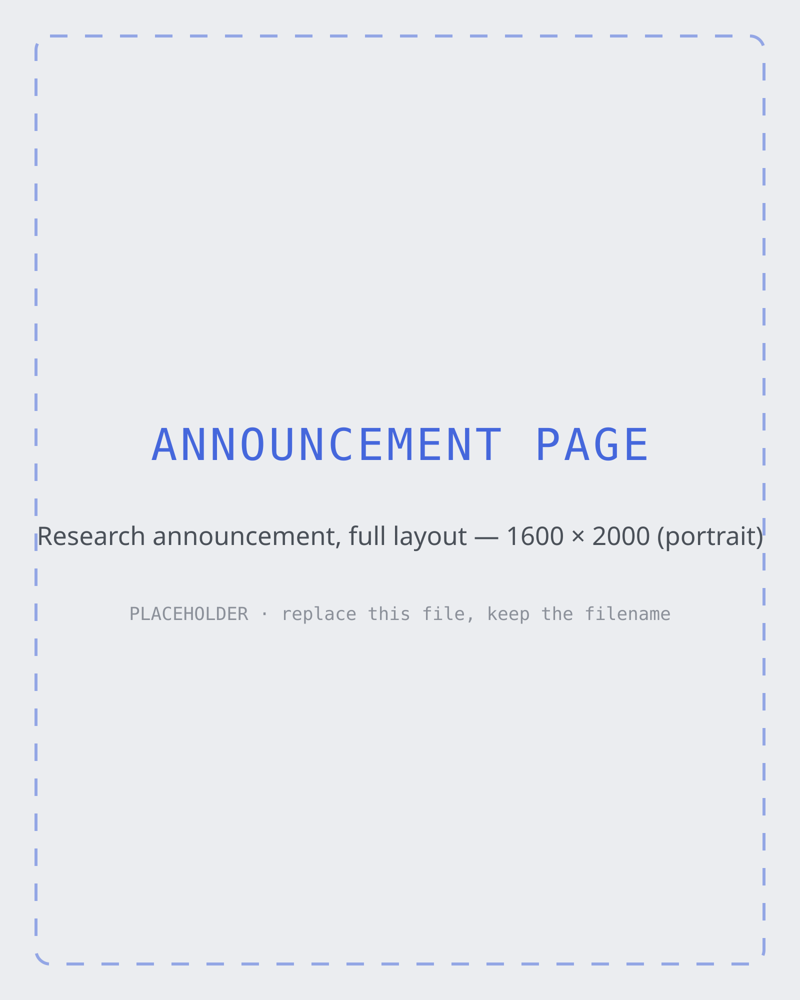

AlphaMissense predicts which single-letter changes to a human protein cause disease — across every such change the genome can make. It is a genuinely important result with almost no visual language around it. So I gave it one: a key visual, a mechanism diagram, and the announcement page they'd live in. This is the thinking behind all three.

A missense variant is a typo with consequences: one letter changes in DNA, one amino acid changes in the protein it builds. Most of those typos are harmless. A few of them cause disease. For decades the trouble has been telling which is which.
The human genome permits roughly 71 million such single-letter substitutions. Of the several million actually observed in people, only a tiny fraction — on the order of two percent — have been clinically classified as pathogenic or benign. The rest sit in a category with one of the bleakest names in medicine: variant of uncertain significance. A family gets a sequencing result, and the answer is a shrug.
AlphaMissense closes a great deal of that gap at once, producing a calibrated prediction for effectively the whole space. That is a genuinely moving result. And when I went looking for how it had been drawn, I found what usually gets made for work like this: a heat-mapped figure lifted straight from the paper, a stock double-helix, or nothing at all.
So I set myself the brief a lab's design team would actually get: make this legible to a smart non-specialist in one scroll, without softening the science or overclaiming what the model does.
The easy version of this diagram explains what a mutation is. Anyone can draw that, and it teaches a reader nothing they couldn't have guessed. The interesting thing about this paper is the part that is hardest to picture, so that is the thing the diagram has to carry.
The model was never handed a list of mutations labelled “causes disease.” Those labels barely exist — that's the whole problem. Instead it learns from two quieter sources: structural intuition inherited from AlphaFold about what a correctly folded protein looks like, and population frequency — which variants turn up routinely in healthy humans and related primates, and which never appear at all.
That absence is the signal. A substitution that is common in living people is, by the fact of those people, tolerable. A substitution that never occurs, in a position where mutation is otherwise common, is conspicuous by its silence — evolution has been quietly removing it. The model is reading a negative space.
Getting a reader to feel that inversion — absence as evidence — is the actual design problem here. Everything else in the piece is in service of it.

Seven years of packaging in regulated healthcare leaves you with one reflex above all others: assume the reader will act on what you made. That changes how you pick a palette.
The obvious move is red-to-green. It is also the wrong one — red–green is the most common form of colour-vision deficiency, and this is precisely the wrong subject on which to lose eight percent of your male readers. The scale below runs teal to warm red, which survives that, and it carries a deliberate desaturated middle: the uncertain band should look uncertain, not like a confident yellow.
Two further rules govern the rest of the system. Density is the argument — the matrix should feel overwhelming at full bleed, because seventy-one million is overwhelming, and then resolve into readable structure as you get closer. And the type stays quiet: a grotesque for reading, a mono for anything that is data, and no third voice. Science visualisation goes wrong when the design starts competing with the finding.
An image that works in isolation and collapses in a template hasn't been designed, only drawn. So the last piece is the container: the research announcement as it would actually publish — hero, standfirst, the diagram in position, the numbers, and the paragraph that says what it means for someone waiting on a diagnosis.
It is also where the system gets stress-tested against a parent brand. A lab's identity has to be recognisably its own and unmistakably part of the larger house it sits in — which is the same problem I've spent seven years solving for consumer-health brands living under one master brand.

The static key visual is a photograph of a thing that wants to be explorable. Hover a cell and get the substitution, the score, and the confidence; scrub along the sequence and watch tolerance change as you cross a functional domain. The data is public, and I write the front-end — this is a build, not a mockup.
Every prediction carries a confidence, and the honest version of this design shows it. Most science communication quietly rounds uncertainty away because it is inconvenient to draw. I'd rather make the ambiguous band legible than pretend the model is more certain than it is — particularly here, where a reader might act on it.
One paper is a poster. The valuable version is a system — a diagram grammar, a colour logic, a set of layouts — that the next twenty announcements inherit, so a lab's research reads as one body of work rather than twenty separate design projects.
The hard part of translating a paper was never the rendering. It was deciding what to leave out.